- 問題ID : 15768 暗号化によるデータの保護
- 履歴
GnuPGにおいて秘密鍵を管理し、パスフレーズによる認証状態を一定期間キャッシュするデーモンプログラムはどれか。
正解
gpg-agent
解説
gpg-agentは、GnuPG（GPG）という暗号化プログラムにおいて秘密鍵を管理し、パスフレーズによる認証状態を一定期間キャッシュするデーモンプログラムです。SSHにおけるssh-agentと同様です。
したがって正解は
・gpg-agent
です。
その他の選択肢については以下のとおりです。
・ssh-agent
SSH接続時にパスフレーズを聞かれないようにするために、メモリ上に秘密鍵を保管しておく認証エージェントです。
・chronyd
ntpdに代わるNTPサーバ/クライアントであるChronyのデーモンです。
・systemd-resolved
systemdの動作するシステムで名前解決を管理するデーモンです。
・gpg-cached
このようなデーモンは存在しません。
参考
GnuPG（GNU Privacy Guard）は暗号化プログラムです。
ファイルの暗号化や復号を行うにはgpgコマンドを使用します。
gpgコマンドの書式と主なオプションは以下のとおりです。
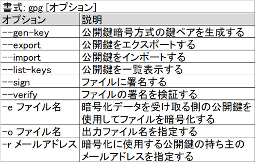
GnuPGの暗号化アルゴリズムは共通鍵暗号方式や公開鍵暗号方式に対応しています。
・共通鍵暗号方式
暗号化と復号に共通の鍵を用います。
処理が早く簡単ですが、複数の相手に同じ共通鍵を使用すると他の人のデータも復号できてしまうので、データを送信する相手ごとに鍵を作成した方がよいでしょう。
以下は共通鍵暗号方式のイメージ図です。
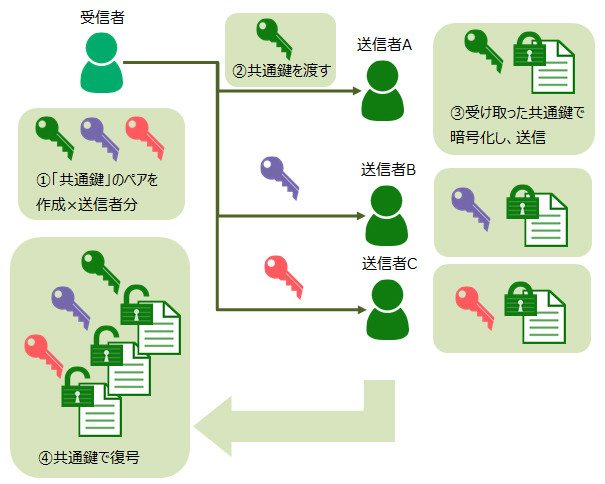
上図とは逆に、送信者が共通鍵を作成して暗号化に使用し、その鍵を受信者に渡す場合もあります。（但し、送信者が信用できない場合は適切な方法ではありません。）
・公開鍵暗号方式
共通鍵暗号方式では送信者と受信者で共通の鍵を使用するため、安全な鍵の受け渡しが重要でした。これに対して公開鍵暗号方式は、自分だけの鍵（秘密鍵）と、誰でも参照可能な鍵（公開鍵）を使用することで共通鍵暗号方式の問題点を回避しています。
公開鍵暗号方式では、公開鍵を使って暗号化したものをペアとなる秘密鍵で復号します。
送信者は暗号化ファイルを送りたい相手の公開鍵でファイルを暗号化して相手に送ります。暗号化ファイルを受け取った受信者は、自身の秘密鍵で復号を行います。正しい鍵ペアの場合のみ復号できますので、送信者も受信者も安全にデータの受け渡しができます。
また、送信者が自身の「秘密鍵」を使ってデータに「署名」を行うこともできます。署名されたデータを受信した相手は送信者の公開鍵を使って署名の「検証」を行い、正当な相手からの改ざんされていないデータであることを確認できます。
以下は公開鍵暗号方式のイメージ図です。
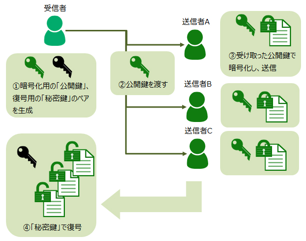
ここでは、試験範囲である公開鍵暗号方式でのファイルの暗号化・復号について解説します。
■公開鍵暗号方式の鍵ペアを作成
暗号化データを受け取る側で、公開鍵と秘密鍵の鍵ペアを作成します。
他者に公開できる公開鍵で暗号化されたファイルは、その公開鍵のペアとなる秘密鍵でしか復号できません。そのため、秘密鍵は作成したユーザのみが管理し他者にもれないようにします。
例）server1のuser1が鍵ペアを作成する
$ gpg --gen-key
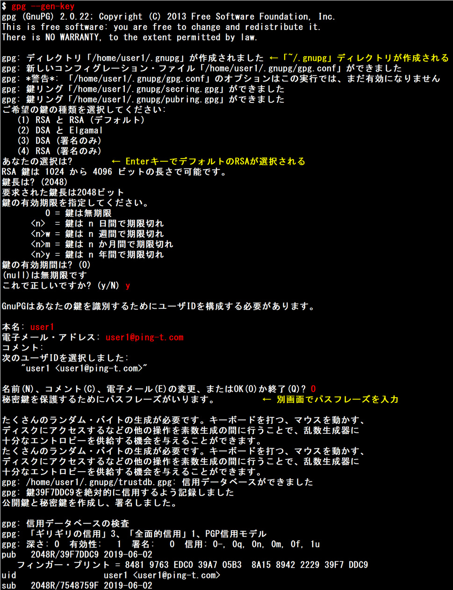
「gpg --gen-key」コマンド実行時に下図のようなパスフレーズを入力するダイアログを表示させるために、pinentry-curses（パスフレーズ入力ダイアログのコレクション）をインストールしておく必要があります。
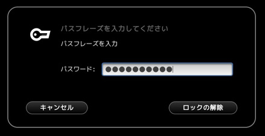
・gpg-agent
gpg-agentというデーモンプログラムが、秘密鍵を管理し、パスフレーズによる認証状態を一定期間キャッシュします。
■公開鍵のエクスポート
暗号化に使用する公開鍵を通信相手に渡すため、公開鍵をファイルに出力します。
例）user1がメールアドレス「user1@ping-t.com」を用いる公開鍵を「pubkey」というファイル名でエクスポートする
$ gpg -o pubkey --export user1@ping-t.com
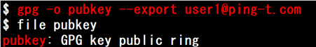
エクスポートされた「pubkey」ファイルは通信相手（暗号化データを送る側）に送っておきます。
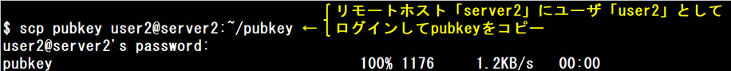
■公開鍵のインポート
暗号化データを送る側で、エクスポートされた公開鍵をインポートします。
例）server2のuser2が、server1のuser1から受け取った公開鍵「pubkey」ファイルをインポートする
$ gpg --import pubkey
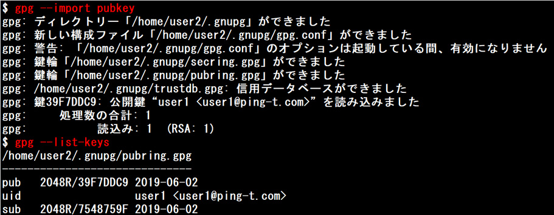
■ファイルの暗号化
暗号化データを送る側で、受け取った公開鍵を使ってファイルを暗号化します。
例）user1から受け取った公開鍵を使ってファイル「hogehoge.txt」を暗号化する
$ gpg -e -r user1@ping-t.com hogehoge.txt
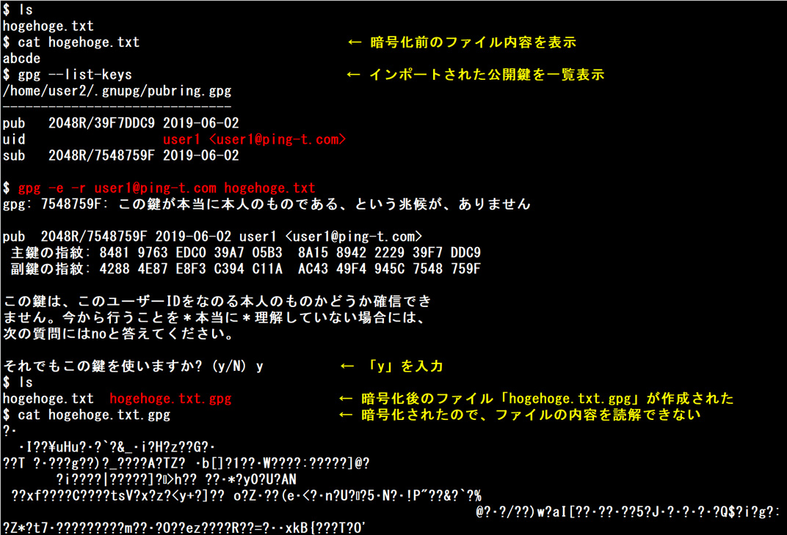
暗号化したファイル「hogehoge.txt.gpg」はserver1のuser1に送っておきます。
■ファイルの復号
暗号化データを受け取る側で、送られてきた暗号化ファイルを自分の秘密鍵を使用して復号します。
例）server2のuser2から送られてきた暗号化ファイル「hogehoge.txt.gpg」を復号する
$ gpg hogehoge.txt.gpg
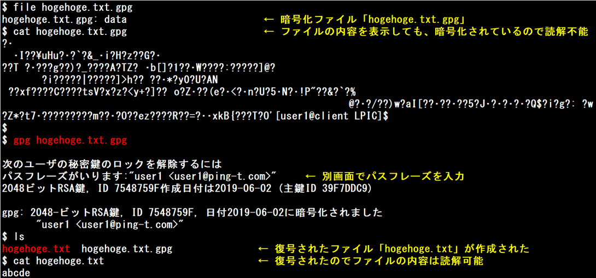
■ファイルの署名
秘密鍵を使用してファイルに署名することで、ファイルの作成者が本人かどうかやファイルが改ざんされていないかどうかを確認できます。
例）「hogehoge2.txt」ファイルに署名する
$ gpg --sign hogehoge2.txt
「hogehoge2.txt.gpg」というバイナリファイルが作成されます。
例）「hogehoge2.txt.gpg」ファイルの署名を検証する
$ gpg --verify hogehoge2.txt.gpg
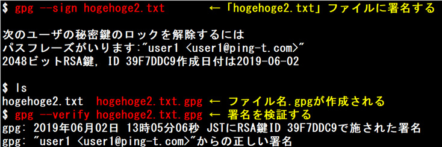